《追色手记46》学习资料
Luiz Claudio：逆光橙黄人像与 Lightroom 精准仿色实操
视频标题 | 还原度99.9%！大师级人像摄影，精准模仿！〡luizclas〡追色手记46 |
作者 | 摄影师聿铭 |
时长 | 约 7 分 16 秒 |
来源 | https://www.bilibili.com/video/BV1fw5rzAE71/ |
整理日期 | 2026-05-22 |
说明：本文根据视频音频转写、画面截取与内容校对整理，保留学习所需的方法、步骤和关键截图，不包含逐字稿。
Luiz Claudio 作品参考截图
以下为视频中展示的 Luiz Claudio 作品和分析画面截图，用来观察逆光、橙黄主调、蓝色点缀与自然抓拍。它们是视频截图，可能保留字幕、界面或讲解标注。
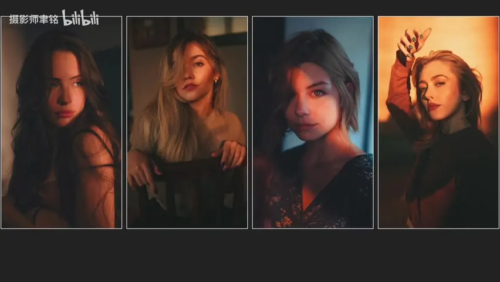 开场对比：原作与仿色混合 | 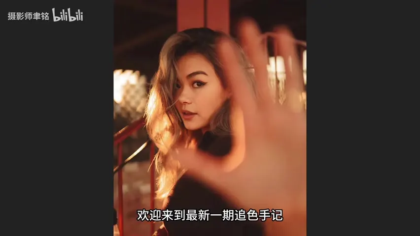 代表人像：橙黄浓郁 |
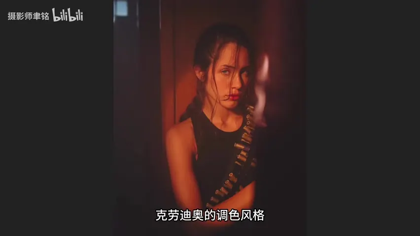 逆光皮肤：柔滑光感 | 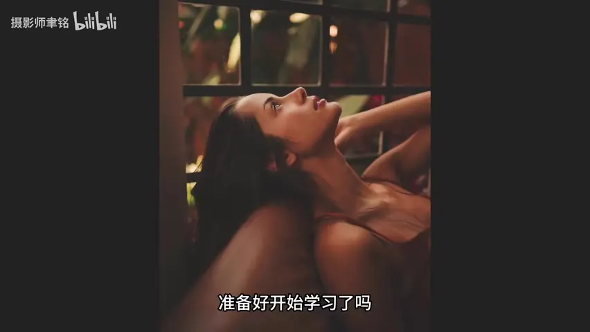 学习入口：风格识别 |
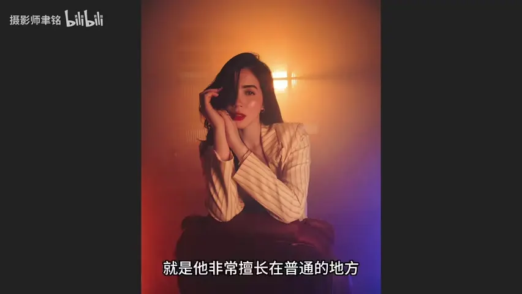 普通地点：拍出高级感 | 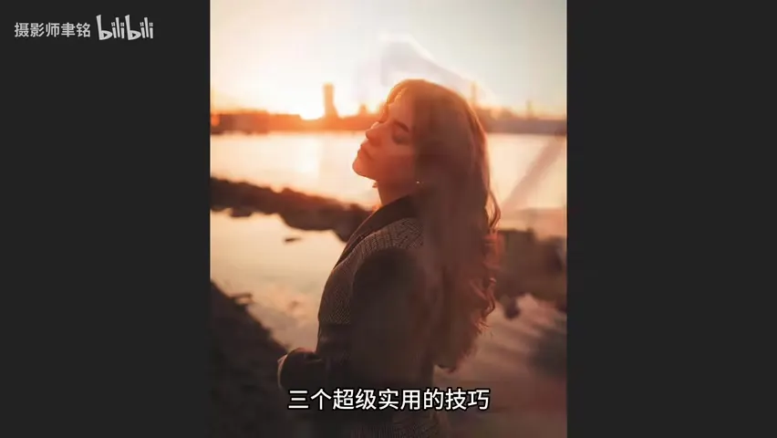 技巧一：逆光拍摄 |
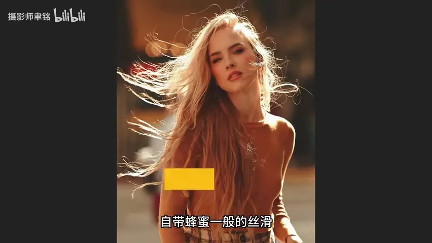 发丝金光：逆光优势 | 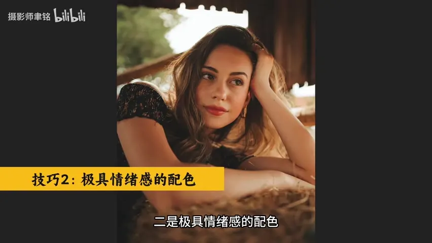 技巧二：橙黄配蓝 |
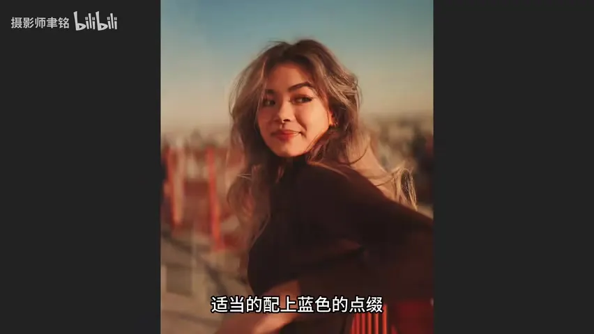 暖主调与冷点缀 | 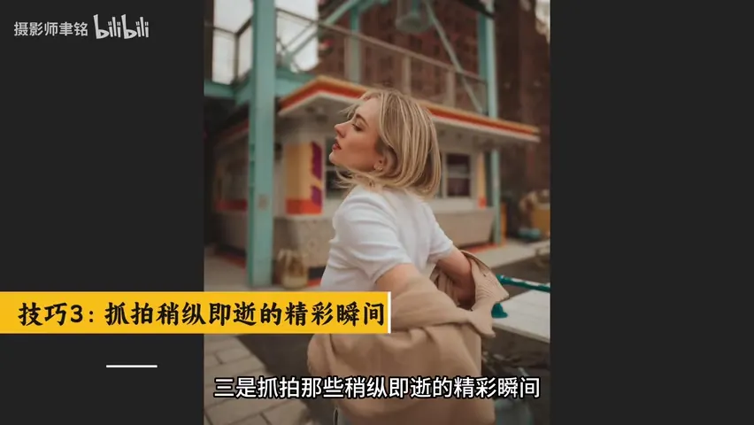 技巧三：抓拍瞬间 |
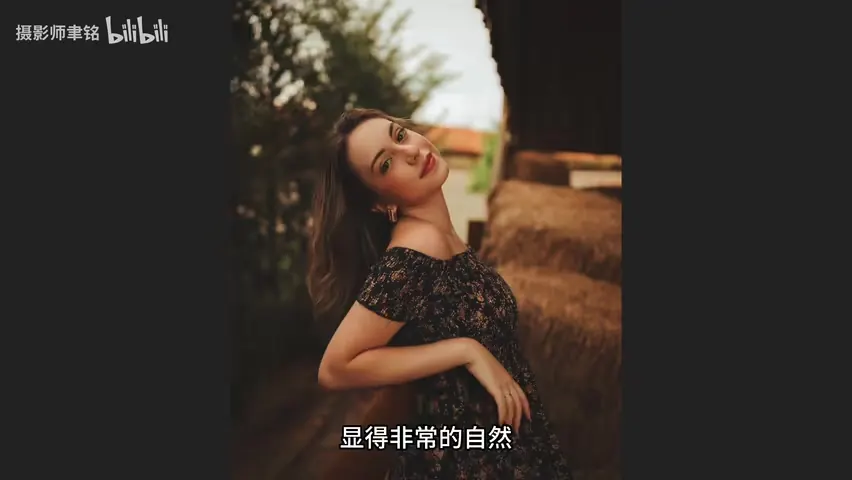 自然姿态：摆脱摆拍 | 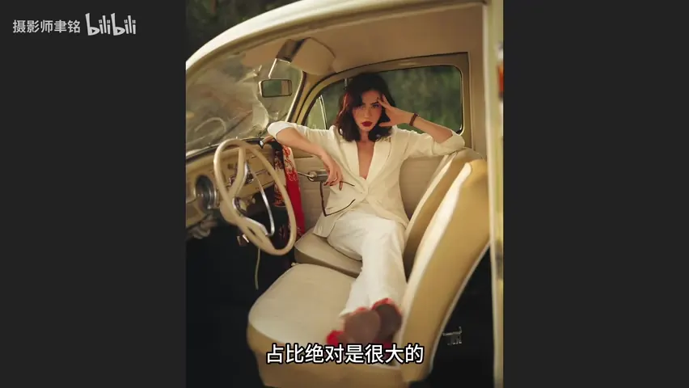 车内场景：占比与氛围 |
一页速览
风格核心 | Luiz Claudio 擅长在普通地点拍出高级感，关键不是场景奢华，而是逆光、橙黄情绪色、少量蓝色点缀和自然抓拍共同成立。 |
前期重点 | 逆光让皮肤自带柔滑质感，头发边缘有金色发光；抓拍让人物摆脱摆拍感，动作和表情更自然。 |
色彩重点 | 大部分画面以橙黄色为主调，少量青蓝/蓝色作为点缀或阴影色，形成暖调人像里的冷暖平衡。 |
后期重点 | 这类照片后期占比很大：先把暗原片提亮，再用曲线、HSL、颜色分级、细节、颗粒和校准塑造浓郁氛围。 |
实操顺序 | 色温略冷 -> 曝光/对比提高 -> 高光白色下压 -> 清晰度/鲜艳度提高 -> 曲线抬黑压中间调 -> HSL 统一红橙黄 -> 阴影青蓝/高光黄色 -> 细节降噪/颗粒 -> 蓝原色色相左移。 |
学习目标
能把 Luiz Claudio 风格拆成逆光、橙黄主调、蓝色点缀和抓拍瞬间四个核心。
理解为什么提升鲜艳度比直接提升饱和度更自然、更协调。
掌握曲线抬黑后必须压回中间调，否则画面会整体发灰的处理逻辑。
能用 HSL 把红、橙、黄统一到温润橙色系，并让肤色通透不过饱和。
能用颜色分级在阴影加入青蓝、在高光加入黄色，再用混合和平衡控制最终冷暖倾向。
核心方法：四层拆解
维度 | 观察重点 | 本片结论 |
逆光 | 皮肤、头发、边缘光和背景光。 | 逆光让皮肤柔滑，头发丝出现金色光边，这是高级感的前期基础。 |
配色 | 主调和点缀色。 | 橙黄色是主调，蓝色作为少量点缀或阴影色，构成经典冷暖组合。 |
瞬间 | 人物动作和表情是否自然。 | 抓拍稍纵即逝的精彩瞬间，减少摆拍感。 |
后期 | 暗原片如何被推向成片。 | 提亮、柔化亮部、强化暖色、加入阴影青蓝和颗粒，使普通素材变得浓郁有氛围。 |
Lightroom 实操流程
基础提亮：原片偏暗但光感已经不错。先色温稍微往冷调移动，再提高曝光，让画面进入可用亮度。
保护亮部：适当提高对比度后，窗户等高光区域接近过曝，因此把高光和白色色阶压下来，让亮部柔和不过曝。
增加质感和色彩：画面灰时提高一点清晰度。颜色浓郁是 Luiz Claudio 的特点，所以提高鲜艳度，而不是饱和度，让色彩更自然协调。
曲线抬黑：把曲线最暗点上提，让暗部有轻微胶片灰；再把中间位置压回，否则画面会太灰、缺少对比层次。
HSL 红色：红色主要是嘴唇口红，色相往橙色微调，让红色更温润；饱和度适当提高，让少量红色成为跳脱点缀。
HSL 橙色：橙色主要影响肤色。色相往暖、橙红方向，饱和度略降避免皮肤过饱和，明亮度提高让皮肤更通透。
HSL 黄色：黄色是画面氛围色。色相往橙色统一，饱和度降低，减少黄色对画面的杂乱干扰。
颜色分级：阴影加入青蓝色，色相约 170-180，饱和度约 10；高光加入黄色并给更多饱和，强化暖色氛围。
混合与平衡：混合往右，让阴影和高光色彩融合更深入；平衡往右，让整体更偏向高光黄色，保持暖调主导。
细节与校准：增加少量锐化，降低明亮度和颜色噪点，让皮肤更干净；加一点颗粒增强质感；蓝原色色相往左，让画面出现更多橙黄色氛围。
工具速查表
工具 | 用途 | 本片操作 | 注意点 |
基础面板 | 让暗原片进入成片亮度 | 色温略冷、曝光上提、对比略增、高光白色下压。 | 提亮后要保护窗户等亮部。 |
清晰度/鲜艳度 | 增加质感和自然色彩 | 清晰度略增，鲜艳度提高。 | 用鲜艳度而不是饱和度，避免颜色粗暴变浓。 |
曲线 | 制造胶片灰和层次 | 最暗点上提，中间调压回。 | 抬黑后一定要看中间调，防止全图发灰。 |
HSL 红橙黄 | 统一暖色系统 | 红往橙并增饱和；橙调肤色；黄往橙并降饱和。 | 画面主要是暖色，其他颜色不必大动。 |
颜色分级 | 建立冷暖氛围 | 阴影青蓝，高光黄色，混合和平衡偏右。 | 青蓝只服务阴影，不要破坏暖调主导。 |
细节 | 让皮肤和眼睛更干净锐利 | 少量锐化，降低噪点和杂色。 | 放大看变化，别过度锐化。 |
颗粒 | 增加质感 | 少量颗粒。 | 颗粒要像质感，不要像噪点。 |
校准 | 强化橙黄氛围 | 蓝原色色相往左。 | 这一步影响全局色彩，幅度要参考画面。 |
关键截图与讲解
图 01 | 00:02 | 开场问题：哪张是仿色。
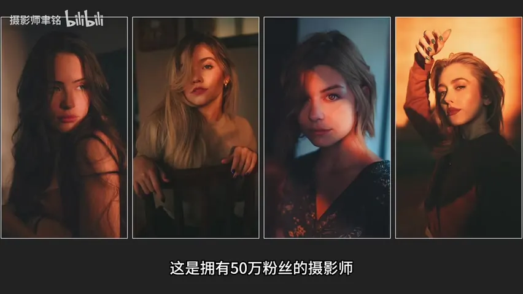
学习要点：视频先用真假混合的方式说明，只要思路正确，后期还原度可以非常高。
图 02 | 00:24 | Luiz Claudio 风格入口。
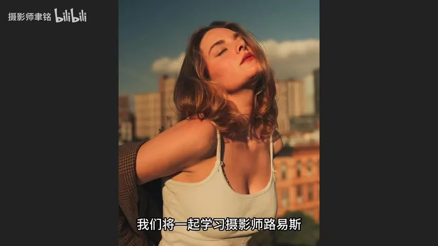
学习要点：本期目标是学习他的调色风格并制作同款预设。
图 03 | 00:45 | 普通地点拍出高级感。
学习要点：风格不依赖奢华场景，而依赖光线、色彩和瞬间。
图 04 | 00:52 | 技巧一：逆光拍摄。
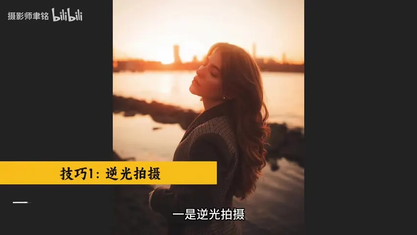
学习要点：逆光让皮肤和头发都有更强的光感。
图 05 | 01:01 | 技巧二：橙黄主调与蓝色点缀。
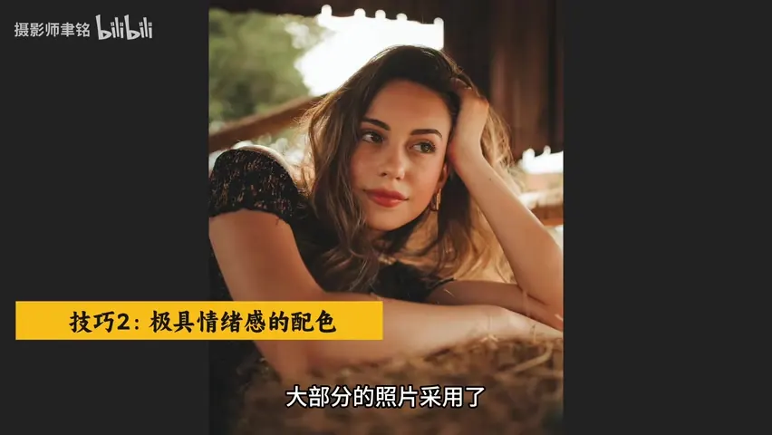
学习要点：暖色主导，少量蓝色平衡，是画面情绪的重要来源。
图 06 | 01:12 | 技巧三：抓拍精彩瞬间。
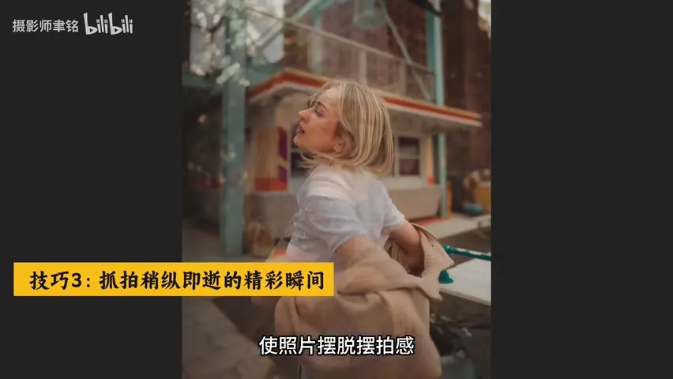
学习要点：自然表情和动作让照片摆脱摆拍感。
图 07 | 01:39 | 进入 Lightroom 原图。
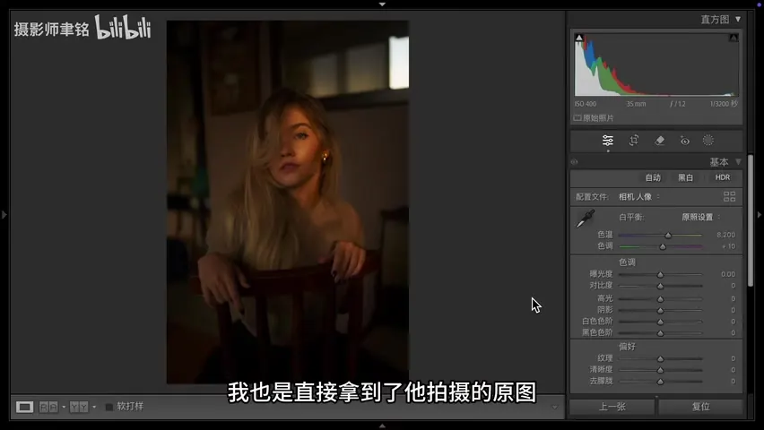
学习要点：原图光感不错，但距离成片还差浓郁色彩和精修氛围。
图 08 | 01:48 | 揭晓仿色图。
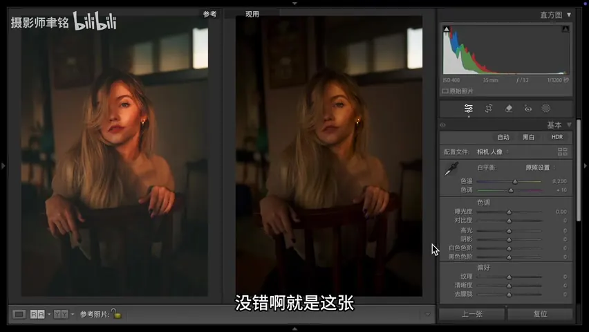
学习要点：说明最终效果主要靠后期完成。
图 09 | 01:59 | 色温微冷、曝光上提。
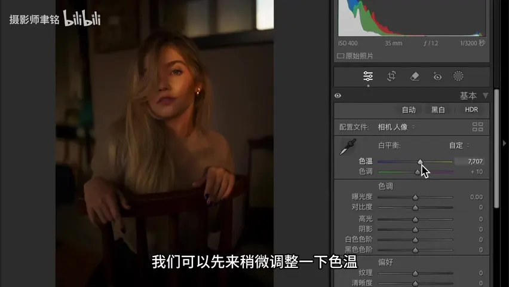
学习要点：先把偏暗素材提亮，并稍微冷却底色。
图 10 | 02:12 | 高光和白色色阶下压。
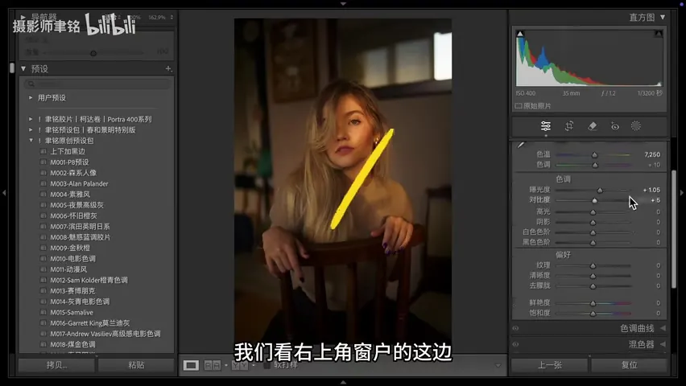
学习要点：保护窗户附近接近过曝的区域。
图 11 | 02:24 | 清晰度和鲜艳度。
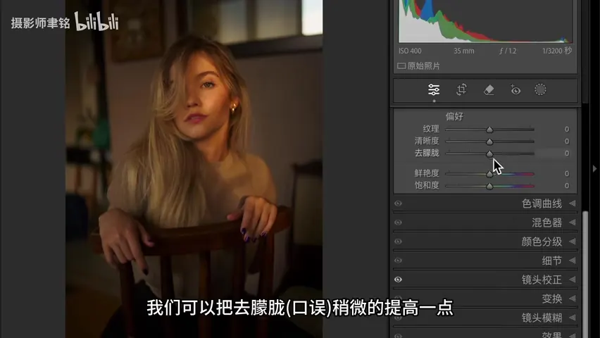
学习要点：画面灰时加清晰度，颜色需要浓郁时优先加鲜艳度。
图 12 | 02:44 | 曲线最暗点上提。
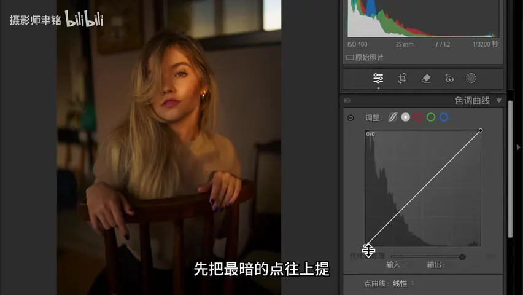
学习要点：给暗部一点胶片灰质感。
图 13 | 02:51 | 中间调压回。
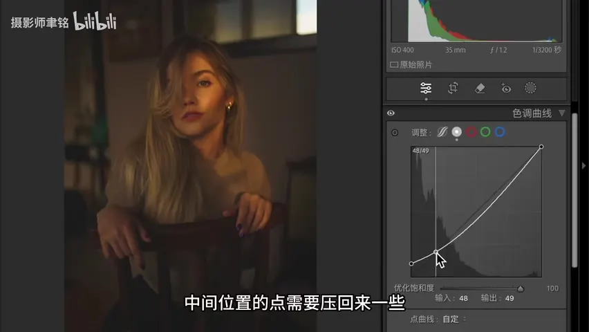
学习要点：防止抬黑后整张图失去对比层次。
图 14 | 03:05 | 混色器：画面几乎只有暖色。
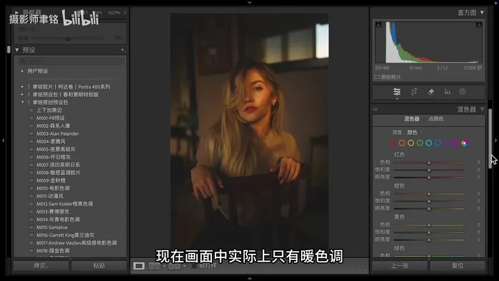
学习要点：因此重点处理红、橙、黄，不必逐个调整所有颜色。
图 15 | 03:23 | 红色：嘴唇口红。
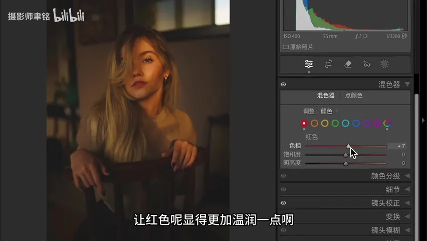
学习要点：红色往橙色靠并增加饱和，形成温润点缀。
图 16 | 03:42 | 橙色：肤色。
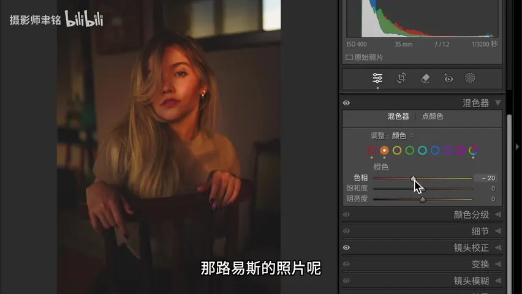
学习要点：肤色偏暖偏橙红，降低饱和并提亮。
图 17 | 04:00 | 黄色：氛围色。
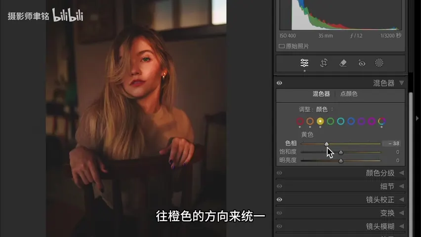
学习要点：往橙色统一并降低饱和，减少干扰。
图 18 | 04:18 | 颜色分级：阴影青蓝。
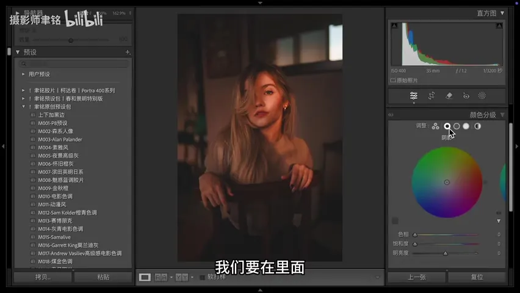
学习要点：在暖色画面里注入少量冷色，增加层次。
图 19 | 04:32 | 颜色分级：高光黄色。
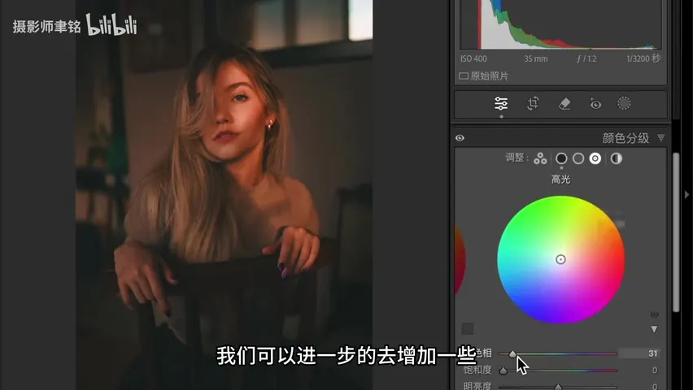
学习要点：进一步强化橙黄色氛围。
图 20 | 04:48 | 混合与平衡。
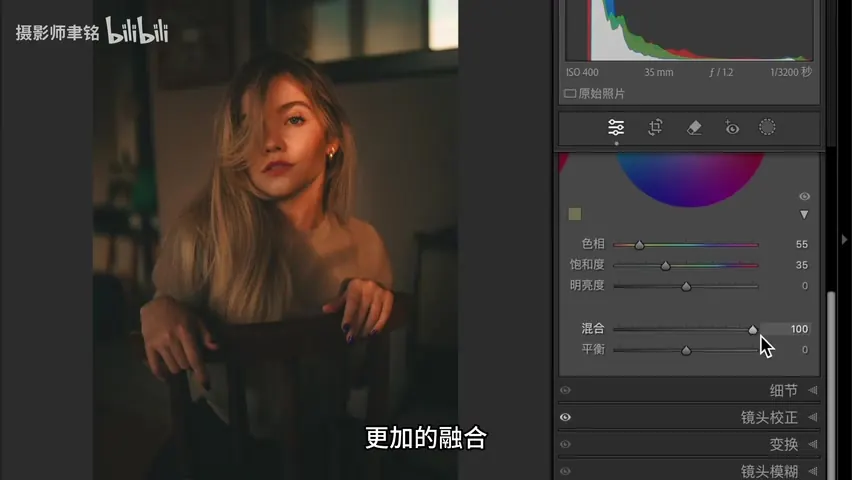
学习要点：让阴影和高光色彩更融合，并让整体偏向高光暖色。
图 21 | 05:13 | 细节：锐化与降噪。
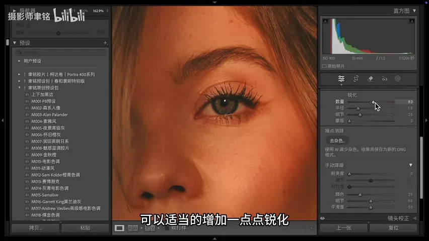
学习要点：眼睛更锐，皮肤更干净。
图 22 | 05:35 | 效果：颗粒。
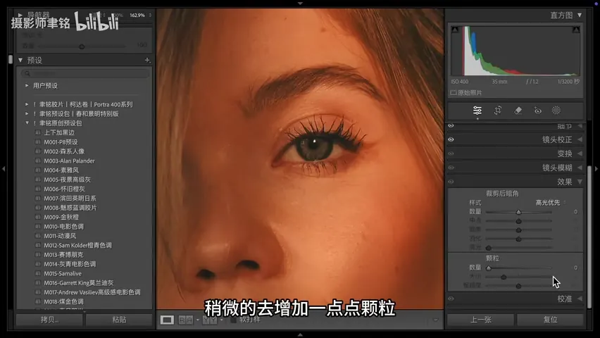
学习要点：增加一点颗粒，让质感更强。
图 23 | 05:51 | 校准：蓝原色色相左移。
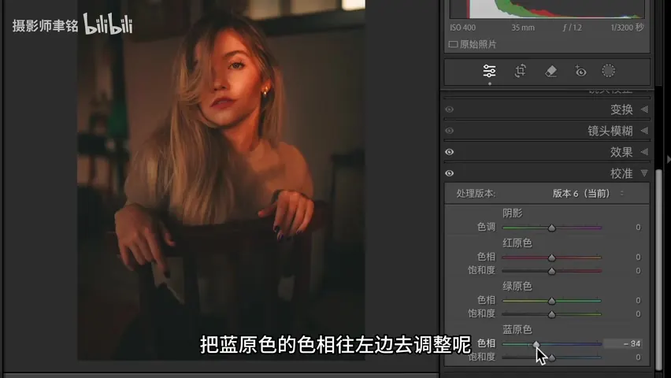
学习要点：让画面出现更多橙黄色，氛围更浓郁。
图 24 | 06:15 | 前后对比。
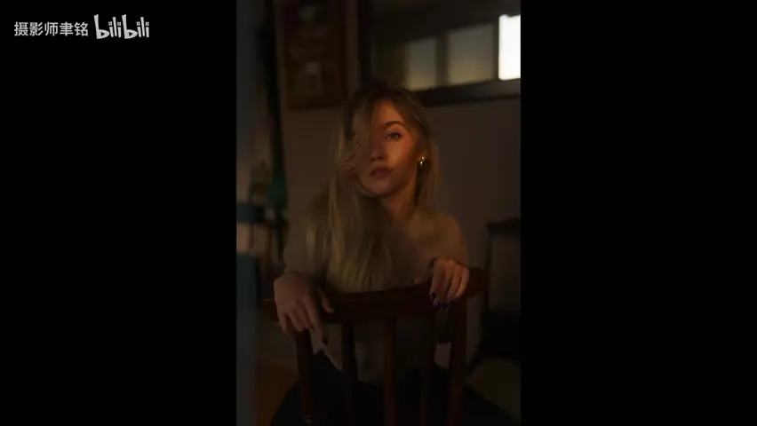
学习要点：暗原片被整理成浓郁、暖调、有光感的人像成片。
练习任务
选择一张偏暗但有逆光或窗边光感的人像，不要选择完全平光照片。
先判断画面中是否存在橙黄主调的潜力，以及是否能保留一点冷色作为点缀。
用基础面板把照片提亮并保护高光，再用鲜艳度建立自然浓郁的颜色。
用曲线抬黑后压回中间调，检查暗部是否有质感但不灰塌。
用 HSL 只重点处理红、橙、黄：红做点缀，橙做肤色，黄做氛围统一。
用颜色分级给阴影青蓝、高光黄色，最后通过校准蓝原色强化橙黄色氛围。
复盘清单
检查项 | 通过标准 |
逆光 | 皮肤和头发有光感，画面不是平光死板。 |
主调 | 橙黄色占主导，整体浓郁但不脏。 |
点缀 | 少量红色/蓝色能提供跳脱感和冷暖平衡。 |
肤色 | 偏暖偏橙红，通透但不过饱和。 |
暗部 | 有轻微胶片灰，但中间调被压回，层次仍清楚。 |
高光 | 窗户或亮部不过曝，暖色氛围自然。 |
质感 | 锐化、降噪、颗粒都轻微，皮肤干净但不塑料。 |
整体 | 看起来像有强烈情绪的人像作品，而不是简单加暖滤镜。 |
时间轴速查
时间 | 模块 | 重点 |
00:00-00:35 | 课程引入 | 用真假混合图提出仿色问题，说明本期目标。 |
00:35-01:20 | 风格回顾 | 普通地点高级感、逆光、橙黄配蓝、抓拍瞬间。 |
01:20-02:35 | 基础调整 | 色温略冷、曝光提高、对比提高、高光白色下压、清晰度和鲜艳度提高。 |
02:35-03:00 | 曲线 | 抬黑做胶片灰，中间调压回防止发灰。 |
03:00-04:15 | HSL | 重点处理红、橙、黄，统一暖色和肤色。 |
04:15-05:05 | 颜色分级 | 阴影青蓝，高光黄色，混合和平衡偏右。 |
05:05-05:45 | 细节与效果 | 锐化、降噪、颗粒。 |
05:45-06:20 | 校准与对比 | 蓝原色色相左移强化橙黄氛围，并查看前后对比。 |
06:20-07:15 | 总结 | 预设适合偏暗人像，鼓励用素材练习。 |
全部图片
本页共保留 35 张来自 Word 的图片。上方正文中已按文档顺序展示，这里作为总览索引。